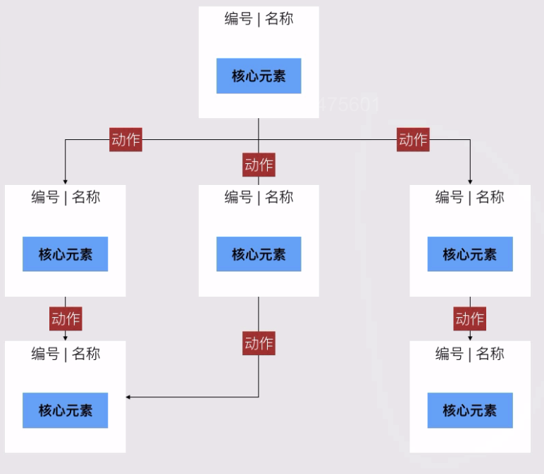

原型设计和PRD
一、原型的基础-页面流程
A.原型的基础-页面流程
1.页面流程图
- 1）交互设计/原型设计的底子，基本依据
- 2）代表用户的操作过程，先做页面流程能快速发现体验问题
- 3）突出页面重点元素与逻辑关系，提升原型设计的效率
- 4）案例

2.页面流程图和信息架构图的区别
- 1）页面流程图，以用户视角，主要看流程的合理性
- 2）信息架构图，以产品视角，主要看包含多少功能点
- 3）页面流程图适合于跳转比较复杂的产品功能，如电商、社交产品
- 4）信息架构图适合于层级分明的，如音乐产品、新闻客户端、阅读类产品等
3.页面流程图包含什么？
- 1）四方形：业务流程中的四方形部分，异常流程为tips或者弹层
- 2）流向：主干流向和辅助流向
- 3）重点元素：每个流程中，重点要体现和表达的内容是什么？
4.画页面流程工具
- 1）Axure足够了，因为画了页面流程紧接着就是原型图
- 2）PPT也可以，快而且容易传输讲解
5.案例
- 1）回归业务流程，明确主线
- 页面流程一定来自于业务流程
- 一般为业务流程中的方形部分
- 异常流程一般为弹层或弹窗
- 业务流程画的好，页面流程就很简单
- 2）明确页面中重点元素
- 功能在页面中，有哪些是需要表现元素
- 增加异常流程的处理逻辑
- 增加辅助的帮助页面
- 考虑下游触发点
- 3）沟通与优化
- 尽可能穷举涉及的页面，然后做减法
- 通过原型草图，优化调整页面关键元素
- 与UI、UE、前端研发等多沟通有更好的效果
二、原型基本功训练
A.原型基本功训练
1.什么是产品原型设计？
- 1）产品原型：俗称线框图，大概就是草图的意思
- 2）产品落地关键点：从虚拟概念到用户接触的节点
- 3）PM产出的关键内容：上传下达，传达给UI、 UE同事
2.产品从原型到上线

3.产品经理为啥要画原型？
- 1）大公司：产品经理不一定需要画原型
- 2）小公司：产品经理连运营工作都要做，原型肯定得做
- 3）不管大小公司：不会画原型的产品经理是不合格的
4.好的原型有什么特点？
- 1）整体感受
- 页面结构清晰
- 跳转关系明确
- 与业务流程一致
- 完整表达用户需求
- 2）独立页面
- 功能元素明确有序
- 位置关系清晰
- 不同状态变化清晰
- 3）交互设计
- 清晰的交互逻辑
- 一致交互方式
- 界面统一
5.三大原型设计常用工具

6.原型只是表达工具，没必要搞得很复杂，关键还是看团队之间的配合默契程度
7.原型设计怎么学？
- 1）练：画原型和画画是一样的，动手比动口重要太多
- 2）真刀真枪：真实的业务、真实的场景去画原型
- 3）可用：不求完美，不炫技，做可用的原型
8.案例：大众点评
- 1）研究流程：通过业务流程，来明确页面流程

- 2）确定页面框架：通过手绘等方式，大概确定页面而局及大框架

- 3）画原型：画模块，确定交互细节
- 4）大量重复：从1-3点，大量重复练习即可
9.原型设计不复杂，关键是多练，熟能生巧
10.原型设计好习惯
- 1）动手之前的忠告
- 产品需求没想明白之前，不要摸Axure
- 产品流程没理清楚之前，不要摸Axure
- 在你没有手绘草图之前，不要摸Axure
- 在你没把草图和Boss过了基本确定之前，不要摸Axure
- 2）避免一上来就画原型
- 做产品和盖楼一样一样的，不要一上来就搬砖
- 提前规划好过程再动手，开始慢，但后面就快了
- 一上来先回顾“用户、场景、需求”，理解本次需求的目的
- 业务流程图是块宝，没流程图肯定歇菜，等着不断改改改吧
- 3）用真实比例，真实的方案
- 真实比例、真实字号会让元素更真实
- 真实文案可以避免在需求评审的时候被质疑
- 真实模拟可能出现的极端情况，并示例清楚
- 4）紧扣需求主题，不横生枝节
- 如果原型需要增加新功能，先考虑后端数据来源
- 不要为了“长得好看”而增加新模块
- 5）不要上颜色
- 原型就用黑白灰即可，不要上颜色
- 做得太漂亮了，坑UI、坑UE
- 做得太漂亮了，万一要调整你会不舍得删
- 6）目录树清晰，阅读流畅

- 7）有修改记录，关键修改重新保存文件

- 8）画原型改原型的时间尽量控制在20%以内，好的习惯能极大提升画原型的效率
三、复杂原型设计
A.复杂原型设计
1.复杂原型设计是什么？
- 1）完整的新产品、完整的新功能
- 2）设计的流程链条比较长
- 3）交互页面、交互逻辑比较复杂
2.复杂原型设计的处理步骤
- 1）需求分析：明确用户场景问题
- 2）产品功能：核心流程信息架构图版本过程
- 3）流程图：业务流程图、页面流程图
- 4）原型设计：手绘原型、软件设计

3.明确用户场景与需求
- 1）目标用户：产品的目标用户是谁？
- 2）使用场景：关键使用场景是什么？
- 3）解决问题：产品可以帮助用户解决什么问题？
- 4）产品亮点：有哪些点会吸引用户使用？
4.产品核心功能
- 1）核心流程：用户流向、内容流向、信息交叉分别是如何的？
- 2）信息架构图：包含哪些模块？每个模块底下有哪些功能点？.
- 3）版本演变过程：要达到相对完整的状态，需要几个版本？每个版本都包含哪些功能模块？
5.流程图分解
- 1）业务流程图：每个功能模块的业务流程是什么样的？
- 2）页面流程图：整体来看，用户的使用流向是如何的？
6.原型设计
- 1）手绘原型：快速确定页面逻辑，快速调整关键元素
- 2）原型设计：按照页面流程图与手绘图，进行demo设计
7.案例：某瘦身App


四、原型相关工具介绍
五、如何写需求文档
A.如何写需求文档
1.什么是需求文档？
- 1）俗称：MRD、 PRD、BRD等等，概念不重要
- 2）效果：说明为什么要干，怎么干，干了后有什么效果
- 3）内容：明确产品背景、需求、流程、原型、交互等内容
- 4）谁看：需求文档的阅读对象：设计、研发、测试
2.需求文档有什么用？
- 1）内部沟通
- 明确产品需求
- 明确产品要求和细节
- 让参与者明确实现的结果
- 2）存档
- 有据可查
- 交接更容易，更职业
- 跟进者了解之前的做法和过程
3.用什么工具写需求文档？
- 1）Word：传统的需求文档都是Word的，如果大的项目，还是建议用Word的来写
- 2）Axure标注：直接用axure中写标，小功能、初创团队的首选，团队配合融洽，可以用这个
4.高颜值的需求文档有什么特点？
- 1）结构：逻辑清晰，层次分明 VS 没有标准过程
- 2）背景：需求背景描述清楚 VS 一上来讲功能和原型
- 3）流程图：业务流程、页面流程均有 VS 一上来讲原型
- 4）目标：考核指标、算法清楚 VS 没指标 凭感觉
- 5）习惯：变更过程清楚 VS 改来改去改回第一版
5.需求文档怎么写？
- 1）项目背景与需求分析
- 谁提的需求？什么场景？遇到什么问题？
- 知道要描述分析过程：决策过程和依据是什么？解决方案是什么？
- 有没相关的背景数据资料？
- 明确本次需求：用户、场景、需求、解决方案是什么？
- 2）本次需求的目的及功能列表
- 这个需求整体是什么样子的？是否要分阶段？
- 本次需求做哪些？前后关系是什么？
- 本次需求的功能清单有什么？
- 涉及的功能或页面有什么？
- 3）流程与所处的产品模块关系
- 业务逻辑图
- 业务流程图
- 页面流程图
- 4）功能详细介绍
- 交互设计图
- 原型图
- 5）简要的测试用例介绍（可选）
- 关键的测试用例是什么？
- 重点关注点
- 错误提示表等
- 6）考核指标与计算方法
- 本次需求要统计哪些指标？
- 怎么计算的？
- 怎么埋点的？

上线前后需要做的事
一、上线前还要做什么？
A.上线前还要做什么？
1.查：产品是否已经满足了上线标准？（上线清单）
- 1）符合上线标准吗？
- 回归测试：核心流程、核心功能是否完整可用
- Bug list清空：是否已经处理完毕？有没有一二级bug
- 时间选择：上线时间选择好了吗？与产品、运营、技术研究
- 冷启动：内容是否已经准备完毕，可以正常使用？如资讯类，是否已经有足够多的信息？如交友类，初始妹子的数据是否填充完毕？
- 文案：所有文案是否明确无歧义？稍后 稍候，帐户 账户，登录 登陆，预定 预订
- 2）运营需要的上线物料准备好了吗？
- 使用文档，帮助文档：是否准备充分？是否已经上线？
- 应用商店：描述、图片等是否准备完毕？
- 帮助中心：文案是否更新？
- 推广物料：有哪些推广渠道？相关物料是否准备好？
2.万一产品很烂，运营有机会来补
3.教：给一切有关的人做培训
- 1）是否告知运营和小伙伴们？
- 运营团队：通知到相关人员，是否需要运营活动配合？
- 客服团队：具体话术、使用教程、培训是否都已经做了？
- 销售团队：对销售可用带来的正面/负面影响是什么？
- 支持团队：如财务（收入、支出）、后勤（奖品支持）等
- 上线后影响：需要哪些人持续支持？明确周期、人和事项
4.预案：万一…怎么办？
- 1）是否有Plan B
- 上线不成功怎么办？回滚会不会影响用户？
- 用户量暴增怎么办？
- 大量投诉怎么办？
- 回滚策略是什么？
5.收：一个小小的好习惯，累积产品经理人品
- 1）上线后的细节决定人品
- 收拾文档，需求文档是否补充完整？如交互图、设计稿是否已经更新；需求变更，更新需求文档
- 未实现的需求、bug的解决方案
6.每个产品经理都应该有一张上线清单，以备上线时自我检查
7.总结：上线前需要做什么？
- 人：各路小伙伴，通知到位
- 物：各种物料、文档都准备到位
- 事项：后续需要谁支持，都提前沟通到位
二、产品上线的目的评估
A.结合产品上线目的制定运营策略
1.评估产品上线目的
- 1）探索

- 运营侧重点：容错性较高的种子用户；重点测试需求和产品价值；关注用户使用情况
- 潜在数据指标：种子用户使用时间；频次；留存率；活跃度；用户美誉度；自然用户新增等
- 2）推广新业务线（新功能）

- 运营侧重点：新功能资源储备；新老业务间的兼容性；新功能推广情况；用户使用情况；客服&用户维系；
- 潜在数据指标：新功能推广方式；用户反馈；推广转化情况；用户停留时间；用户使用活跃度等
- 3）拉升某个特定数据

- 运营侧重点：目标拆分&细化；数据分析&策略调整
- 潜在数据指标：分解 目标重点数据；运营手段满地；执行有效性
三、产品上线的推广方案（一份完整运营方案要考虑的三个方面）
A..产品价值的完善&维系
1.产品的核心价值中，是否有必须依赖于运营端来给用户提供的？
2.产品的核心价值中，是否有一部分需要不断依赖于运营进行维系？
3.为了构建完善的产品价值，是否还需要引入更多资源？
B.做好用户告知和产品推广的渠道
1.产品上线后，如何告知已有用户使之来使用？
2.产品上线后，如何面向新用户发声和进行推广，更好拉动用户增长？
3.通过何种形式告知用户效果更好，可以更好带来转化率？
4.已有推广资源是否足够，是否需要开拓更多资源？
5.总结：
- 1）站内：EDM、Push、各种推荐位、用户引导位
- 2）站外：社会化媒体 、外部渠道、活动等
C.如何建立和维系好产品生态
1.从用户新增-留存-活跃-传播这条路径上来看，有哪些环节是本版上线后需要运营去重点关注和辅以运营手段落实执行的


2.戴明环

- 1）任何一个好的运营方案，本身就是经过持续迭代和自我完善而成的
3.总结：
- 1）制定产品运营方案的基本原则
- 先明确宏观战略目标，再考虑落地
- 先完善产品价值，再考虑放大和传递产品价值
- 执行！执行！执行！
四、上线邮件怎么写
A.上线邮件怎么写
1.什么是上线邮件：上线后一段时间，由项目负责人发给相关同事的通报邮件，主要描述研发过程和上线结果的邮件
2.为什么要写上线邮件？
- 1）总结与记录：总结项目过程，未来翻查资料速度超快
- 2）项目推动：产品上线后才是开始，需要推动、协调各方资源
- 3）团队润滑剂：给参与者、帮助你的人正向回应
3.高颜值的上线邮件有什么特点？
- 1）标题很直白：标题简单明了说明项目内容，（产品+版本+卖点+动作）
- 2）内容很清晰：有背景、有过程、有功能清单、有后续计划
- 简要描述一下研发过程
- 简单介绍一下需求背景是什么？
- 上线的功能清单是什么？
- 数据对比是如何的？
- 后续的计划是什么？
- 是否需要同事的支持？
- 3）数据有对比：上线前后的数据对比来说明效果（3-5天后发或者3-5天后补发一份数据邮件）

- 4）表扬有技巧：说案例、说小事、说观察
- 谁，给你提供了什么帮助
- 谁，在研发过程中，有哪些事情让你很“感动”
- 从谁身上，学到了什么东西？
- 5）获得帮助与支持：提前准备好素材和资料，提时间和要求（细节做的好）
- 求测试，则附上测试账号和收集渠道
- 求推广，附上相应的位置、文案、物料
- 求销售，准备好材料和宣讲会时间（使用帮助）

五、上线后的销售额分析
A.上线后的销售额分析
1.思路1


2.思路2


3.例子

4.提升转化率方法：流程梳理与AB测试

5.一个核心原则
- 1）金字塔原理

- 2）当你把一个宏大的目标拆解得足够细的时候，你对它的掌控力也就自然增强了
6.总结
- 1）目标分解的基本原则
- 自上而下，层层拆分
- 越重要的目标，要拆得越细
- 2）一个运营的好习惯
- 让70%的事情变得可控
- 多思考，多分析
六、上线后的转化率分析
A.上线后的转化率分析
七、目标拆解的核心原则
A.目标拆解的核心原则
产品经理的沟通和协作
一、一些让人糟心的提问
A.好问题&坏问题
二、如何评估一个问题的好坏
A.如何评估一个问题的好坏
1.好问题 坏问题


三、如何问出聚焦且开放的问题
A.如何问出聚焦且开放的问题
1.具象且可被回答的问题

2.问题背景清楚

3.中立看待，不预设立场

4.提问之前，自己先思考

四、提问的素养
A.提问者的素养问题
1.不要期望把别人的回答当你的论据

2.简单问题先百度….

3.不要问商业秘密

B.如何提升提问的效果？
1.明确目的：你究竟想了解什么？
- 1）目的是什么？

2.提升提问的技巧
- 1）提问强制使用如下语句开头

- 2）强制增加背景和补充材料
- 3）以封闭问题寒暄，以开放聚焦的问题结束
3.追问更高效
- 1）追问行为

- 2）追问观点的分解

团队内的项目管理
一、产品评审怎么做
A.产品评审怎么做
1.什么是需求评审？
- 1）统一思想，明确需求，确定实现过程的会议
- 2）俗称挑刺大会，撕逼大佬，逼死产品经理大会
- 3）通常评审会要经过几次，一次完成要拼“专业度”和“产品人品值”
- 4）需求评审过程通常很激烈，通常会有很多类似问题逼问产品经理

2.需求评审都有什么人参加？

3.为什么非得做需求评审？
- 1）让所有人都明确需求的背景和目的
- 2）提前确认和统一产品需求实现的过程和方法
- 3）让参与者明确知道工作内容和交付时间
- 4）让研发、测试评估产品开发周期，让产品经理做决定
B.如何组织一场成功的需求评审会
1.开场前的准备工作
- 确认你的需求、文档、原型都完成了吗？
- 提前找核心人员小范围沟通，提前消灭大问题
- 和核心与会者确认可出席时间
- 至少提前2天发出会议邀请，定好会议室
- 会议邀请时主动带上需求文档和原型交互设计稿等相关资料
- 提前到会议室！提前演练一遍！
2.评审会现场
- 1）不要一上来就讲功能
- 2）抓大放小，细节上不要争论
- 3）讲需求要有节奏和条理
- 4）记录重要的争论点

3.评审会后
- 1）追排期！追排期！追排期！
- 2）整理遗留问题，并拿出解决方案
- 3）发出会议记录，每个问题都有行动计划
- 4）发出修改后的需求文档，并更新到内部系统中
- 5）约下一次的评审的时间（如需要）
4.需求评审会，能极大锻炼产品经理的表达能力、逻辑能力、说服能力、执行力
二、什么是项目管理
A.什么是项目管理
1.产品过程项目管理是什么？
- 1）为了保证产品能如期上线，而衍生出来的管理，就是项目管理
- 2）项目管理的目的是提升团队工作效率
- 3）通过一系列的方式方法，让团队效率最快，就是敏捷开发
2.好的项目管理明显特征
- 1）目标：有明确的目标
- 2）时间：有明确的开始和结束时间，有deadline
- 3）事项：有明确的工作事项、工作分工和交付物标准
- 4）参与者：有相对确定的参与者
3.产品经理为什么要管项目？》
- 1）省人
- 2）省钱
- 3）省事
- 4）省心
4.产品经理和项目经理的区别？
- 1）产品经理：需求、目标、方向
- 2）项目经理：分解、进度
5.常用的项目管理工具
- 1）看板：大白板+便利贴
- 2）需求管理：Excel+邮件
- 3）管理工具：Tower.im / Teambition等
- 4）其他：电子看板什么的
6.进入开发阶段，产品经理按照项目的方式来管理是非常好的习惯
三、如何让项目提速
A.如何让项目提速
1.产品经理管项目，最重要关注什么？
- 1）进度：控进度、跟进度、保进度
- 2）资源：给兄弟姐妹们争取资源，协调资源
- 3）风险：延期、变更风险预警
- 4）效率：想办法让项目快起来
2.快起来第一步：明确目标，统一思想
- 1）明确目标：要完成什么产品功能，上线后对各方的收益
- 2）明确时间：开始、预期结束的时间
- 3）明确回报：设定奖励规则
3.快起来第二步：拆分项目并公开
- 1）拆分阶段上看板：ToDo、Doing、QA、上线
- 2）拆分功能上看板：本项目会有哪些功能点？写卡片
- 3）功能点责任到人：正在做的功能点，都谁负责，登记卡片
4.快起来第三步：进度透明
- 1）站立会：每日站立会，通报进度
- 2）看进度：谁提前，表扬谁，谁delay，帮助谁
5.快起来第四步：总结项目
- 1）结束总结：每个项目结束，务必总结，提升合作的顺畅程度
- 2）营造氛围：保持团队氛围很重要
- 3）解决问题：问题出在哪个环节？哪个人身上？
6.团队配合是通过一个一个项目迭代后磨炼出来的，而不是通过最好的“管理工具”实现的
B.产品经理如何避免被打
1.提升自己的专业度
- 1）少改需求！少改需求！少改需求！
- 2）明确版本/功能的重点是什么，需求优先级是啥
- 3）清晰的流程、原型、文档
- 4）全员认真的需求评审
- 5）测试用例、测试过程全程参与
2.提升自己的职业素养
- 1）出席站立会、不迟到、陪团队一起加班等
- 2）态度端正，以身作则，少抱怨，多鼓励
- 3）及时同步变化，公开透明
- 4）把一切落实在纸面上，会议有记录，讨论有记录，有邮件同步
- 5）给团队争取提前量
3.产品狗被打是常态，但不被打的产品狗一定是条好狗
四、产品经理如何与他人配合
A.产品经理如何与测试配合
1.产品测试过程是如何的？

2.主动
3.产品为什么一定要参与测试？
- 1）对产品开发的状况做基本的了解
- 2）对产品的bug做判断
- 3）bug修复的优先级调整
4.产品经理怎么参与测试？
- 1）基于你的需求文档，自己挖的坑自己填
- 2）回归流程，你流程入手，确保流程没问题
- 3）从流程中分解测试用例（大用例，小用例QA出）
- 4）复现->保留现场->记录->找QA->找研发
- 5）提bug（一定要区分bug和改进）
- 6）对bug分优先级：必须改（一级）、可以改（二级）、下回改（三级）
最小可行化产品
一、PMF的定义
1.关于Product-Market Fit（PMF）概念

2.产品脱离市场：Product/market underfitting
3.如何判断PMF临界点
- 1）留存：30%的新用户次日留存
- 2）新增用户DAU：大于100
- 3）用户数：10万用户数
4.PMF三种类型
- 1）更好体验的产品：如slack、tower、美图秀秀
- 2）抓住细分市场：如uber、P2P
- 3）全新的市场：微博的@、探探的左右划
- 4）综合体：如airbnb，符合上面的1和3
5.PMF带来的改变
- 1）产品从idea到成功


- 2）PMF是训练出来的
二、产品MVP的尝试
1.理解MVP概念：（Minimum Viable Product）
2.MVP有什么用？
- 1）提前踩坑：更容易收集用户的喜好，聚焦用户的核心需求
- 2）减少成本：先做一个最小版本看看，人力投入最小
- 3）缩小开发周期：IOS安卓PC一起来，三个月后发现错了
- 4）收集种子用户：和种子用户一起成长
3.什么样的产品符合MVP原则
- 1）仿真Demo：看起来是真的，但实际上是假的
- 2）产品介绍视频：先做一个视频，发给种子用户看看
- 3）文档：一个真实做出来的文档，吸引用户下载
- 4）预售：有了图文介绍，开始预售，吸引用户下单
- 5）着陆页：先介绍，收集用户信息
三、商业产品
A.了解商业产品
1.淘宝的商业模式是什么？淘宝已经不是一句话能说明了

2.商业模式很重要吗？
- 1）很重要：代表产品的生存，企业的未来
- 2）不重要：有用户才有商业模式，有产品价值才有商业价值
3.主流的商业模式：To C、To B、B To C
4.商业模式不是规划出来的，是演变出来的
B.商业产品是规划出来的
1.什么是商业产品
- 1）以变现为目的的产品：商业产品就是为收入服务的
- 2）平衡商业与用户：商业产品与用户产品之间，取得平衡
- 3）可持续发展：短期收益与长期收益之间的平衡
2.商业产品是商业模式的产品化表现

C.如何选择商业变现的途径
1.明确产品优势
- 1）产品价值：你的产品，能给用户提供什么样的价值点？
- 2）用户特点：活跃度高低？留存率高低？拉新效率高低？
- 3）付费意愿：哪些用户愿意为哪些服务（价值）付费？
2.明确产品阶段
- 1）节奏：有节奏的上商业产品，而不是一次性全上
- 2）关注数据：不同产品阶段，重点关注的数据项有区别

3.变现路径选择
- 1）To B：大流量，提供独特的产品价值或服务
- 2）To C：大用户量，提供独特的价值或服务
- 3）B To C：大用户量+大流量

4.商业产品的逻辑